Belgische Simplex bijenkasten, herwerkt met aandacht voor duurzaamheid, gebruiksgemak en esthetiek.
Massief Douglas hout biedt van nature uitstekende weerstand tegen weer en wind. Afgewerkt met hoogwaardige Zweedse houtverf die het hout laat ademen en jarenlange bescherming biedt.
U kiest het type dak, het aantal bakken, de kleuren per onderdeel en alle gewenste opties.
Zes authentieke tinten die harmoniëren met de natuur. Elke kleur verwijst naar een Zweeds landschap.
Volledig gemonteerd en geschilderd. U hoeft zelf niets meer te doen voor u kunt beginnen imkeren.
Onze kasten worden afgewerkt met een authentieke Zweedse houtverf die het hout laat ademen en langdurige bescherming biedt. De matte uitstraling versterkt de natuurlijke charme van Douglas. Elke Nordic Beehive kan volledig in één kleur of per onderdeel afzonderlijk geschilderd worden. Ontdek hieronder het bijhorende tafereel en laat u meevoeren naar de Zweedse zomer.
Diepgroen zoals Zweedse bossen. Rustgevend, natuurlijk en harmonieus.
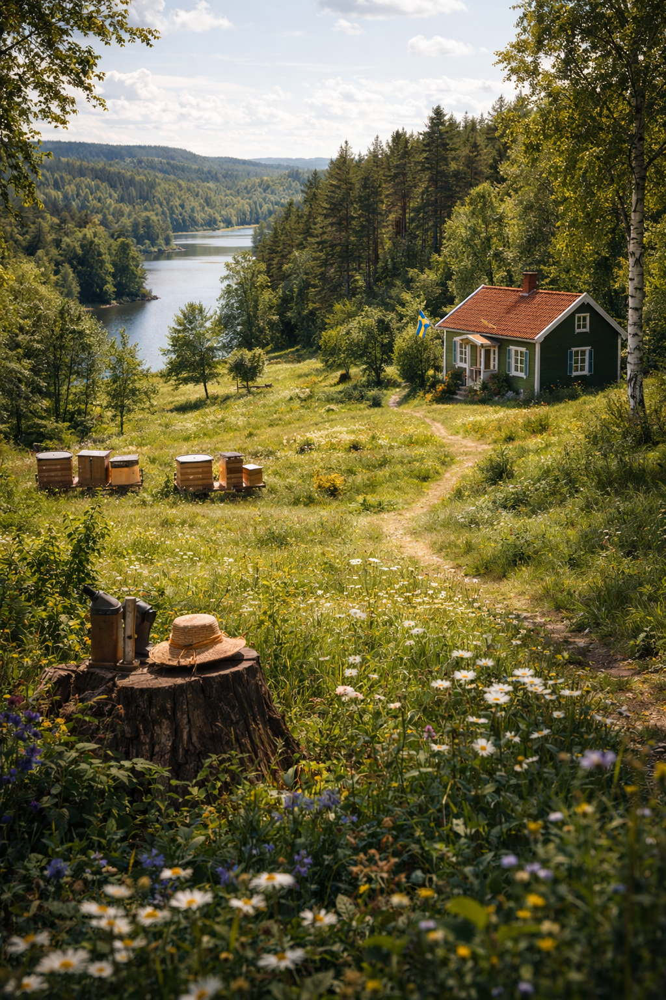
Helder als Zweedse meren onder een open zomerlucht.
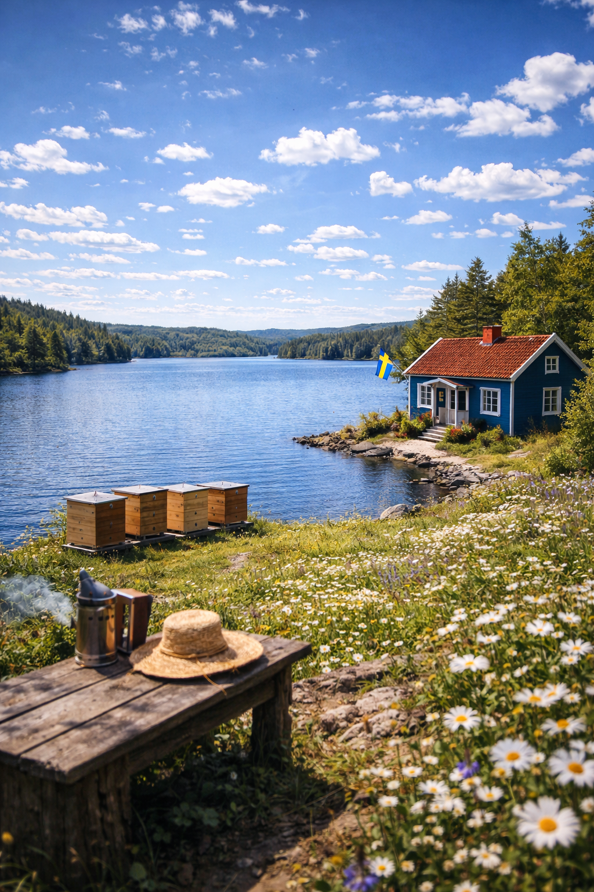
De iconische Zweedse klassieker. Warm, krachtig en tijdloos.
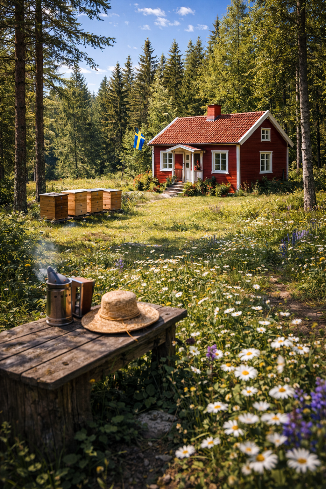
Zonnig en levendig, zoals een veld in volle bloei.
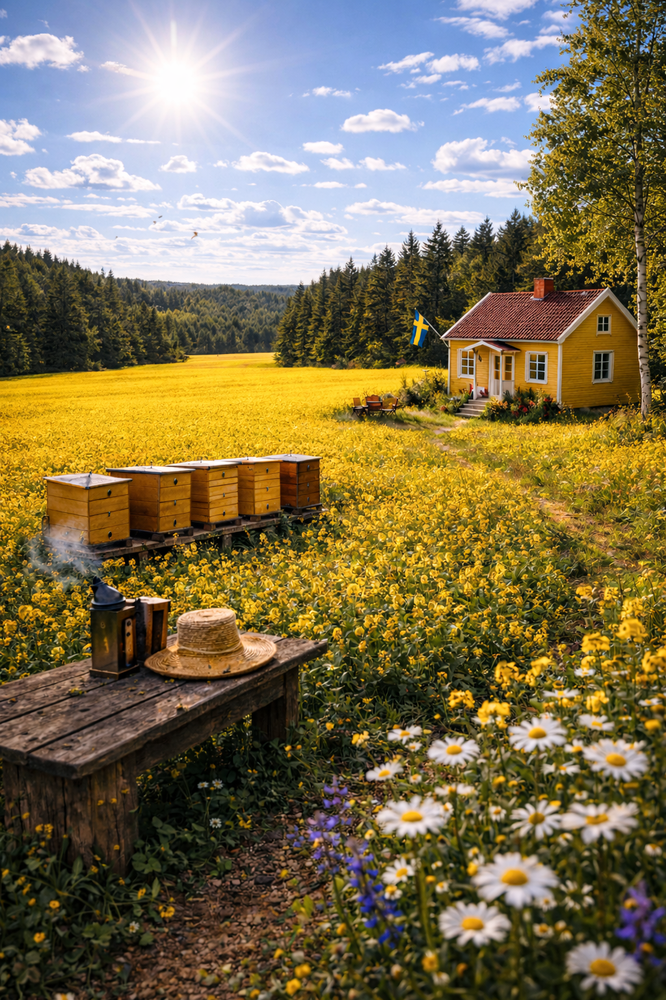
Helder en puur, ideaal voor moderne kasten of als accent.
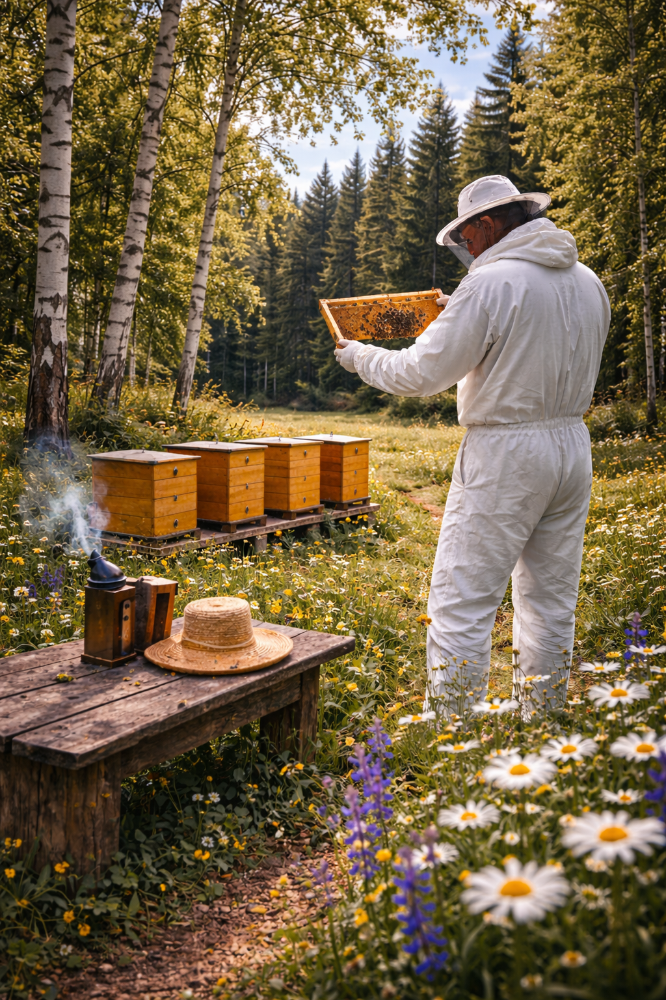
Zacht en warm, zoals houten gevels in het avondlicht.
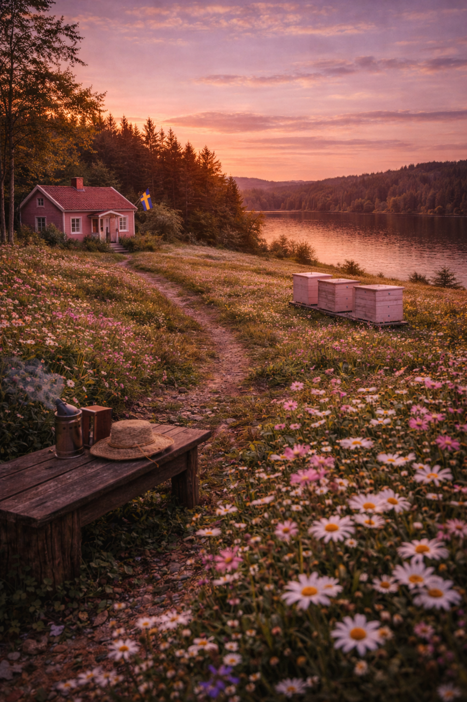
Deze foto's zijn bewust genomen voor het verven. Zo ziet u precies wat er onder de verf zit: massief Douglas hout, afgewerkt met vingerlas-verbindingen, ingefreesd handvat en raamsteun in roestvrij staal. Niets verborgen, alles gemaakt om te duren.
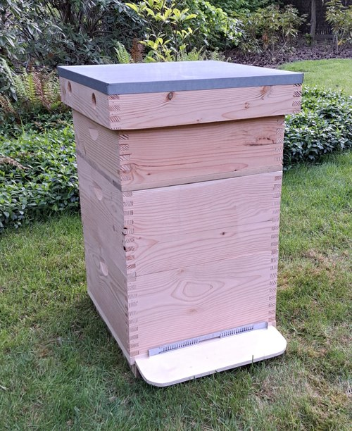
De kast, klaar voor het verven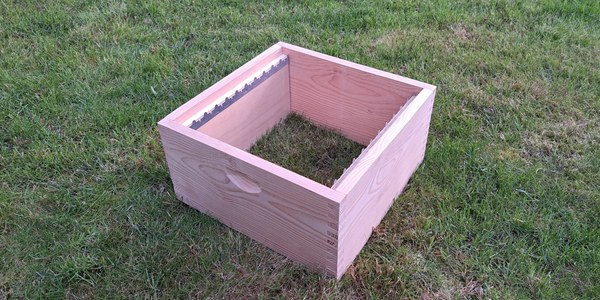
Broedbak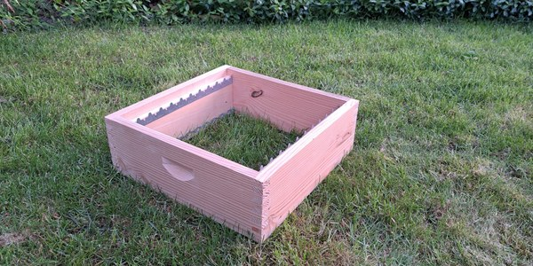
Honingzolder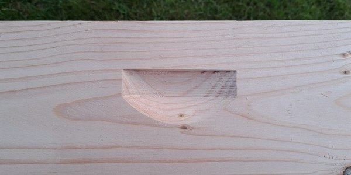
Ingefreesd handvat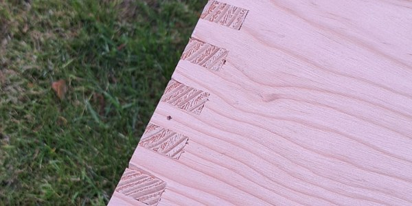
Vingerlas-verbindingKies uw onderdelen, kleuren en opties via de configurator.